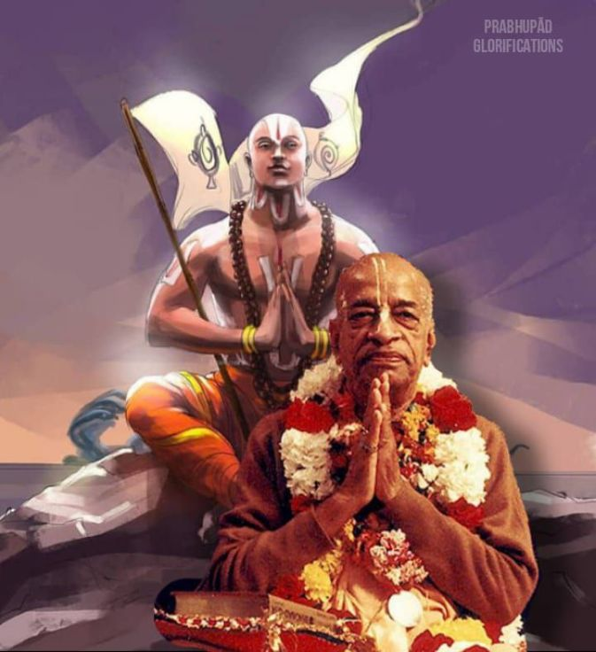

Similar Lives
Posted on : 7th february, 2025

Prabhupada definitely had a soft spot for Ramanujacharya. Their congruent lives indicate why.
Both had an unconventional schooling that foretold their awaiting missions. Ramanujacharya’s parents were Krishna devotees yet had him taught by a renowned Mayavadi. While other children were playing marbles, Ramanuja was rehearsing the arguments that would later leave Mayavada in tatters.
Similarly, though Prabhupada’s father wanted Abhay to remain a devout follower of Radharani, he did not send Abhay to a traditional gurukula, but to a British college. Home was practically a medieval temple, yet Abhay was being tutored by the Empire. He studied Shakespeare and Keats and developed a fluency and love for the global language – English. Krishna had it all planned.
From childhood, both had friendship circles broader than normal. Teenager Ramanuja empathized with tribals and later saluted a “lower-caste” as his mentor. Similarly, Abhay mingled cordially with Calcutta’s many religious and racial communities.
Both endured incompatible wives before renouncing marriage to make the world their family.
Each had little time with his guru, but the moments were decisive. One glimpse and Yamunacharya knew that Ramanuja would look after Sri Vaishnavism. Likewise, Srila Bhaktisiddhanta Sarasvati intuited immediately that Abhay Caran would fulfill Mahaprabhu’s global mission.
For both Ramanujacharya and Prabhupada, genius was not for winning arguments, but friends – bringing people to Krishna. To attract the masses both stretched the mores.
Ramanujacharya’s outreach transcended caste, communal, and gender boundaries. When temple priests scolded the common people to stay out, Ramanujacharya said, “Please come in.” Hitherto, the erudite had rejected all but spartan savants; Ramanujacharya taught any newcomer. He marveled at a young woman’s scholarship, adopted a Turkish princess, and had a pious homeless woman enshrined. Ramanujacharya had the love and courage to initiate outsiders into the Sri Vaishnava aristocracy.
Prabhupada too was the people’s champion. Class, race, or sophistication was immaterial. As Satsvarupa Dasa Goswami writes in Srila Prabhupada-lilamrita (Chapter 20), “Never mind whatever sinful things they were doing, these people were perfect candidates for Krishna consciousness. Tompkins Square Park was Krishna’s plan; it was also part of the earth, and these people were members of the human race.”
Prabhupada did not see mlecchas (persons considered uncivilized by Vedic standards), but only spiritual potential, and whatever a born brahmana could do, they could do – better too. His Western disciples would take Vedic culture into modernity and beyond. He empowered women to worship deities, recite confidential mantras, lead kirtanas, record albums, manage temples, and give lectures.
These initiatives irked the orthodoxy. Ramanujacharya faced jealous persecution, and Prabhupada’s godbrothers neglected him. As Prabhupada’s movement flourished, their neglect sometimes degenerated into uncomplicated envy. Evil Duryodhanas are easily faced, but when even Bhishmas fight you, it is demoralizing and difficult to stay focused on your duty. Both Ramanujacharya and Prabhupada did. Gloriously.
Both were “green.” Ramanujacharya promoted the universe as God’s body, clarified that He incarnates in all species for their welfare, and always fitted temples into the countryside. Similarly, Prabhupada’s eco-friendly farming communities exemplified a simple, more natural way of life. He emphasized God’s love for all creatures, and consequently humankind’s responsibility towards them.
You have seen Krishna’s picture. He’s embracing the calf also, and He’s embracing Radharani. Not that He’s simply attached to Radharani and the gopis. He’s attached to everyone, every living entity. Therefore Krishna is the best friend of everyone. (Lecture, 16 October 1972)
These were the empathies, revolutions, and risks of forthcoming preachers, not reticent gnostics. Ramanujacharya and Prabhupada did not rest in cozy holy places. They traveled till exhausted. As a cow’s milk is not for herself, so too their every excellence was for saving others.
~ Dr. A.D. Srirangapriya Ramanujadasan in Back to Godhead.